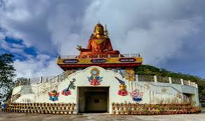
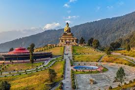
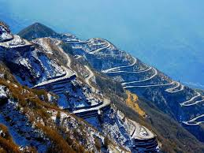
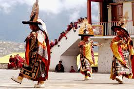

CITIES AND PLACES
Gangtok
- Tsongmo Lake: A stunning glacial lake surrounded by snow-capped mountains, popular for its scenic beauty.
- Ganesh Tok: A viewpoint offering panoramic views of Gangtok and the Kanchenjunga range, along with a small temple.
- Rumtek Monastery: A significant Buddhist monastery known for its beautiful architecture and serene environment.

- Nathula Pass: A historic mountain pass on the India-China border, known for its breathtaking views and significance.
- MG Marg: The main street in Gangtok, lined with shops, eateries, and vibrant local culture.
- Enchey Monastery: A beautiful monastery located on a hill, offering tranquil surroundings and views of the city.
Namchi
- Samdruptse Hill: Famous for its towering statue of Guru Padmasambhava, offering breathtaking views of the surrounding mountains.
- Namchi Monastery: A serene monastery providing insights into Tibetan culture and Buddhism.
- Char Dham: A pilgrimage site featuring replicas of the four sacred shrines of India, set in a beautiful landscape.

- Yangang Village: A picturesque village nearby, known for its lush landscapes and traditional Sikkimese culture.
- Rock Garden: A beautiful garden featuring stunning rock formations and scenic views.
- Ravangla: A nearby town known for its Eco Park and beautiful hiking trails.
Pelling
- Khangchendzonga Falls: A breathtaking waterfall that offers stunning views and is a great spot for photography.
- Pelling Sky Walk: A glass skywalk that provides panoramic views of the Kanchenjunga mountain range.
- Sanga Choeling Monastery: One of the oldest monasteries in Sikkim, known for its serene atmosphere and beautiful architecture.

- Rabdentse Ruins: The historical ruins of the old capital of Sikkim, offering insights into the region's rich heritage.
- Yangtey Monastery: A beautiful monastery known for its vibrant architecture and tranquil surroundings.
- Chenrezig Statue: A massive statue of Avalokiteshvara, a symbol of compassion, located on a hilltop with stunning views.
Mangan
- Mangan Monastery: A serene monastery offering stunning views and a peaceful atmosphere for meditation.
- Seven Sisters Waterfalls: A beautiful series of waterfalls that are a popular spot for photography and nature walks.
- Kanchenjunga National Park: A UNESCO World Heritage site, known for its diverse flora and fauna, as well as breathtaking landscapes.

- Chungthang: A scenic town nearby known for its confluence of rivers and lush greenery.
- Rongli: A picturesque village offering stunning views of the Himalayas and rich cultural experiences.
- Singhik View Point: An excellent viewpoint offering panoramic views of the Kanchenjunga range.
Gyalshing
- Rabdentse Ruins: The historic site of the former capital of Sikkim, featuring stunning views and remnants of ancient architecture.
- Pelling Sky Walk: A beautiful glass bridge offering panoramic views of the Himalayas, perfect for adventure seekers.
- Sanga Choeling Monastery: One of the oldest monasteries in Sikkim, known for its peaceful ambiance and beautiful surroundings.

- Yuksom: The starting point for treks to Kanchenjunga, rich in history and natural beauty.
- Khecheopalri Lake: A sacred lake surrounded by legends, known for its stunning scenery and tranquility.
- Kanchenjunga National Park: A UNESCO World Heritage Site, home to diverse flora and fauna, ideal for nature lovers and trekkers.
Other Attractions
Zuluk
- Zuluk Village: A quaint village known for its scenic views of the Himalayan ranges and terraced fields.
- Old Silk Route: A historical trade route that offers breathtaking landscapes and glimpses of local culture.
- Thambi View Point: A popular viewpoint that provides stunning panoramic views of the Kanchenjunga mountain range.

- Rudra Falls: A beautiful waterfall located near Zuluk, perfect for nature lovers and photographers.
- Chopta Valley: A serene valley known for its lush green meadows and tranquility, ideal for picnics.
- Gnathang Valley: A stunning valley known for its picturesque landscapes and local flora and fauna.
Teesta River Rafting
- Description: Teesta River rafting is a thrilling adventure activity in Sikkim, known for its stunning scenery and exciting rapids.
- Location: The river flows through the eastern region of Sikkim, offering various stretches suitable for both beginners and experienced rafters.
- Best Time to Visit: The ideal time for rafting is from March to June and September to November, when the river's water levels are perfect for adventure.

- Safety Measures: Always wear a life jacket and follow the guidance of experienced instructors.
- Nearby Attractions: Explore nearby places like Gangtok, Nathu La Pass, and various trekking routes for a complete adventure experience.
- Package Options: Various adventure tour operators offer rafting packages that include equipment, guides, and transportation.
Festivals and Cultural Events
Losar
- Celebration of New Year: Losar marks the Tibetan New Year, celebrated with family gatherings, special meals, and rituals.
- Traditional Music and Dance: Festivities include vibrant cultural performances featuring traditional music and dances.
- Offerings and Prayers: People visit monasteries to make offerings and pray for prosperity and happiness in the coming year.

- Community Feasts: Families prepare and share special dishes like rice, meat, and traditional sweets during the festival.
- Decorations and Rituals: Homes and monasteries are adorned with colorful decorations, and traditional rituals are performed.
- Unity and Culture: Losar promotes unity among communities, showcasing the rich cultural heritage of Sikkim.
Adventure and Nature Activities
Trekking and Hiking in Sikkim
- Goecha La Trek: A popular trek that offers breathtaking views of Kanchenjunga, the third-highest peak in the world.
- Dzongri Trek: A moderate trek through lush forests and beautiful landscapes, ideal for both beginners and experienced trekkers.
- Singalila Ridge Trek: A scenic trek along the Singalila Ridge, providing stunning views of the Himalayas.

- Green Lake Trek: A lesser-known trek leading to the serene Green Lake, perfect for solitude and nature lovers.
- Yuksom to Dzongri Trek: A challenging trek through diverse landscapes, including rhododendron forests and alpine meadows.
- Chopta Valley Trek: An offbeat trek that provides stunning views of snow-capped peaks and lush valleys.
Birdwatching in Sikkim
- Khangchendzonga National Park: A UNESCO World Heritage Site, home to diverse bird species, including the Himalayan Monal and Blood Pheasant.
- Singalila National Park: Famous for its stunning views and rich birdlife, it's a great spot for birdwatchers looking for rare sightings.
- Yuksom: This quaint village is known for its beautiful landscapes and offers opportunities to spot various birds, especially in the early mornings.

- Fambong La Wildlife Sanctuary: A serene place for birdwatching, known for its rich biodiversity and scenic beauty.
- Namchi: This town is not only famous for its cultural sites but also offers birdwatching opportunities in its lush surroundings.
- Dzongu: Located in North Sikkim, this area is home to various birds and offers a peaceful environment for birdwatching.